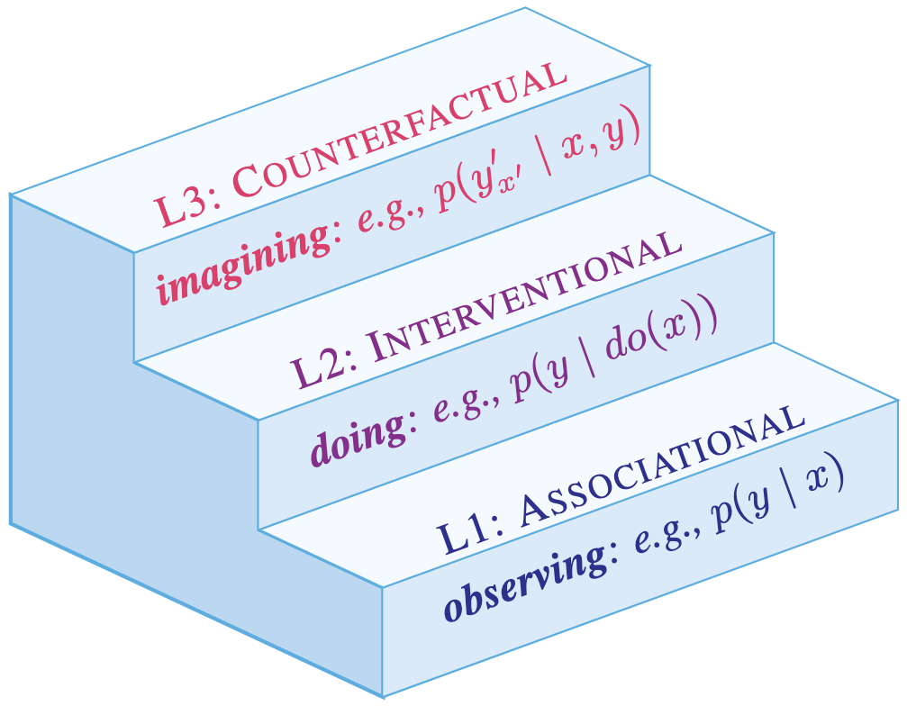
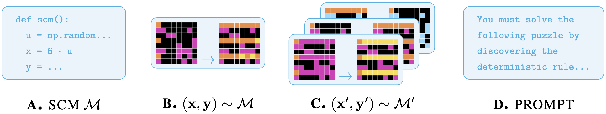
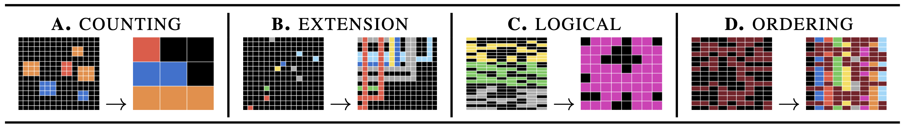
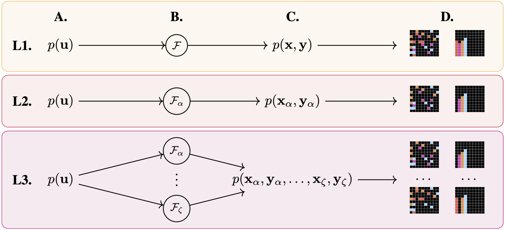
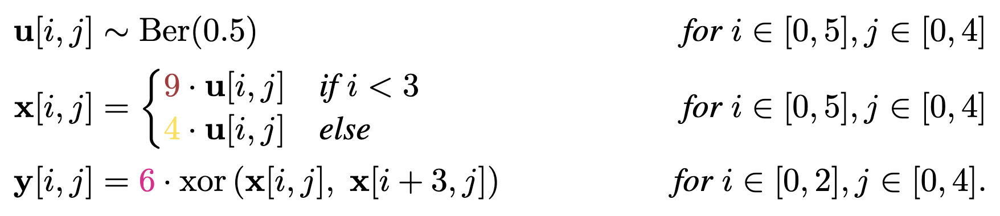
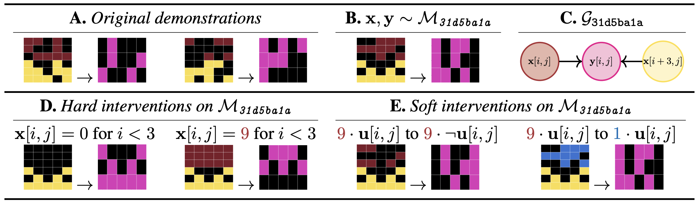

Abstract. On-the-fly reasoning often requires adaptation to novel problems under limited data and distribution shift. This work introduces CausalARC: an experimental testbed for AI reasoning in low-data and out-of-distribution regimes, modeled after the Abstraction and Reasoning Corpus (ARC). Each CausalARC reasoning task is sampled from a fully specified causal world model, formally expressed as a structural causal model (SCM). Principled data augmentations provide observational, interventional, and counterfactual feedback about the world model in the form of few-shot, in-context learning demonstrations. As a proof-of-concept, we illustrate the use of CausalARC for four language model evaluation settings: (1) abstract reasoning with test-time training, (2) counterfactual reasoning with in-context learning, (3) program synthesis, and (4) causal discovery with logical reasoning. Within- and between-model performance varied heavily across tasks, indicating room for significant improvement in language model reasoning.

The Pearl Causal Hierarchy. Observing factual realities (L1), exerting actions to
induce interventional realities (L2), and imagining alternate counterfactual realities (L3). Lower levels generally underdetermine higher levels.
This work extends and reconceptualizes the ARC setup to support causal reasoning evaluation under limited data and distribution shift. Given a fully specified SCM, all three levels of the Pearl Causal Hierarchy (PCH) are well-defined: any observational (L1), interventional (L2), or counterfactual (L3) query can be answered about the environment under study (Bareinboim et al. 2022). This formulation makes CausalARC an open-ended playground for testing reasoning hypotheses at all three levels of the PCH, with an emphasis on abstract, logical, and counterfactual reasoning.

The CausalARC testbed. (A) First, SCM M is manually transcribed in Python code. (B)
Input-output pairs are randomly sampled, providing observational (L1) learning signals about the
world model. (C) Sampling from interventional submodels M' of M yields interventional (L2)
samples (x', y'). Given pair (x, y), performing multiple interventions while holding the exogenous
context constant yields a set of counterfactual (L3) pairs. (D) Using L1 and L3 pairs as in-context
demonstrations, we can automatically generate natural language prompts for diverse reasoning tasks.

CausalARC is designed for hypothesis-driven model evaluations and detailed error analyses. As in ConceptARC, tasks are labeled by reasoning theme (logical, counting, extension, and ordering). As in Shojaee et al. (2025), CausalARC supports evaluation with respect to scaling problem complexity by configuring most tasks with tunable array sizes.
As in ARC, CausalARC features high task diversity: each task instance is sampled from a unique world model. In program synthesis approaches to ARC, world models are specified as computer programs (e.g., a Python program). The present work assumes a causal world model describing the data generating process, which we define in the formal language of SCMs (Pearl 2009). As the PCH is well-defined given a fully specified SCM, this offers an information-rich world model upon which we can perform symbolic operations.

Jointly observed counterfactuals in CausalARC. (A) The distribution over the exogenous context (i.e., the external state). (B) Transformations applied to the exogenous context. (C) Induced distributions, following from the applied transformation. (D) CausalARC samples from each rung of the PCH. Adapted from Bareinboim et al. (2022).


A fully recovered SCM. A manually recovered SCM for ARC-AGI-1 task 31d5ba1a, an inspiration point for the CausalARC testbed. Every CausalARC task is associated with a fully specified SCM, upon which we can perform interventions.
@inproceedings{maasch2025causalarc,
title={CausalARC: Abstract Reasoning with Causal World Models},
author={Maasch, Jacqueline and Kalantari, John and Khezeli, Kia},
booktitle={NeurIPS 2025 Workshop on Bridging Language, Agent, and World Models for Reasoning and Planning}
}